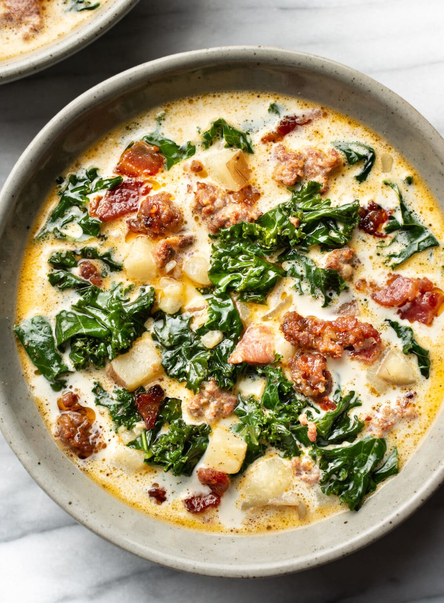

Zuppa Toscana

Description
This Easy Olive Garden Zuppa Toscana Soup is a super quick and simple copycat recipe with rich, creamy flavor you can't resist!
Ingredients
- 1 pound spicy Italian ground sausage
- 4 tablespoons butter
- ½ white onion - diced
- 1 tablespoon minced garlic
- 6 cups chicken broth
- 4-5 yellow potatoes - cut into 1-inch pieces
- 2 cups heavy cream
- 4 cups chopped kale
- chopped bacon or bacon bits and grated parmesan cheese
Instructions
- In a large pot saute sausage 5-6 minutes until browned. Use a slotted spoon to transfer sausage to a plate and set aside.
- In the same pot, add butter and saute onions over medium heat until translucent. Add garlic and saute for another minute until fragrant.
- Add chicken broth, water, potatoes, salt, and pepper and bring to a boil. Boil until potatoes are tender. Stir in kale, and heavy cream. Add sausage. Taste and add salt and pepper if needed. Serve garnished with grated parmesan cheese and/or bacon if desired.
Home